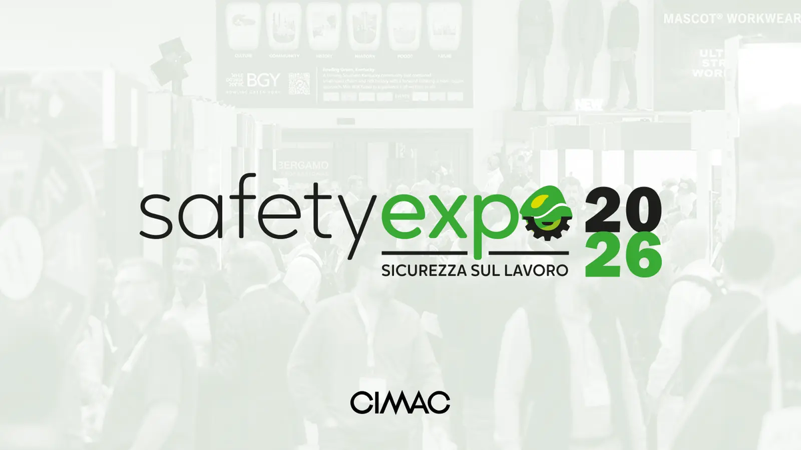
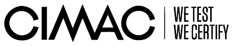
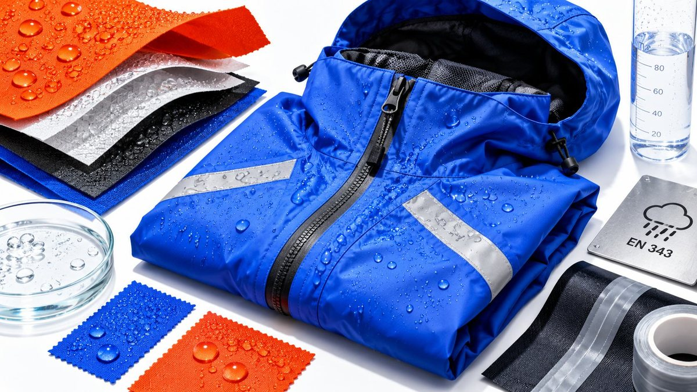
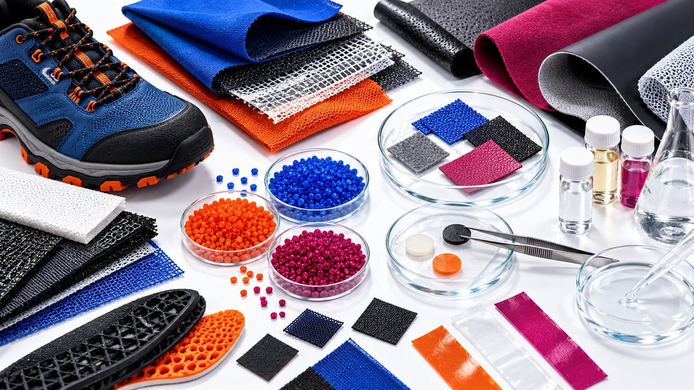

Evento
CIMAC al Safety Expo 2026
16–17 settembre 2026 · Fiera di Bergamo
IT · In revisione — download non ancora approvato

Seleziona la lingua, consulta le anteprime e scarica l’HTML soltanto dopo approvazione. Le versioni inglesi saranno rese disponibili dopo traduzione e revisione.

16–17 settembre 2026 · Fiera di Bergamo

Nuova norma di riferimento che sostituisce EN 343:2019

Materiali, filiera e preparazione ai futuri requisiti

BPA, nuovi requisiti e verifiche per materiali a contatto con alimenti

Prove, requisiti e percorso di conformità

Categorie, prove e valutazione della conformità

Dal 4 novembre al 1 dicembre 2026 · Corso per il settore calzaturiero

Documentazione tecnica, prove di laboratorio e dichiarazione UE
English preview for technical and editorial review.
English preview for technical and editorial review.
English preview for technical and editorial review.
English preview for technical and editorial review.
English preview for technical and editorial review.
English preview for technical and editorial review.
English preview for technical and editorial review.
English preview for technical and editorial review.
Template HTML vuoto con placeholder per testi, immagini e CTA. Non è una newsletter approvata né pronta all’invio senza compilazione.
Scarica master HTML vuoto ↓